Connection Instruction between Talend and FusionInsight¶
Succeeded Case¶
Talend 6.4.1 ↔ FusionInsight HD V100R002C80SPC200 (HDFS/HBase/Hive)
Talend 7.0.1 ↔ FusionInsight HD V100R002C80SPC200 (HDFS/HBase)
Note: Because of the version bug of Talend 7.0.1, Hive cannot be successfully connected. Using Talend 6.4.1 for substitution.
Installing Talend¶
Purpose¶
Installing Talend 7.0.1
Prerequisites¶
- Installing FusionInsight HD cluster and its client completed
Procedure¶
-
Configure the JAVA_HOME into Path Environment Variables
-
Configure Kerberos
Get Kerberos related userkeytab and krb5.conf files by login into the FusionInsight HD manager web UI and put them into the following directory C:\ProgramData\Kerberos. In addition, create a new file named krb5.ini with the same content of krb5.conf, put the krb5.ini file into the following directory C:\Windows

- Download TOS from the following web pages
https://www.talend.com/products/big-data/big-data-open-studio/, create the jaas.conf file for zookeeper connection with its content shown as follows
Client {
com.sun.security.auth.module.Krb5LoginModule required
useKeyTab=true
keyTab="c:/developuser/user.keytab"
principal="developuser@HADOOP.COM"
useTicketCache=false
storeKey=true
debug=true;
};
- Sart TOS_BD by clicking
TOS_BD-win-x86_64.exe

Installing additional Talend Packages

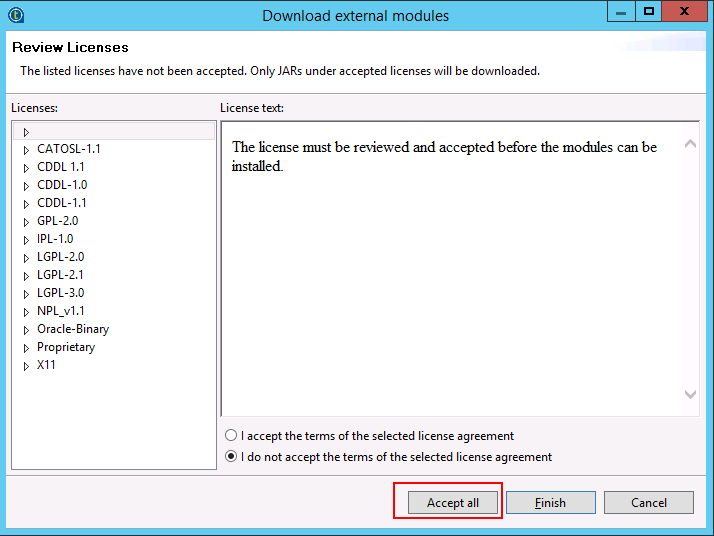
Connecting Talend to HDFS¶
Purpose¶
Configuring Talend related HDFS processor to connect FusionInsight HD HDFS
Prerequisites¶
-
Installing Talend 7.0.1 completed
-
Installing FusionInsight HD cluster and its client completed
HDFS Connection Procedure¶
- Add the tHDFSConnection component with its configuration shown as follows:
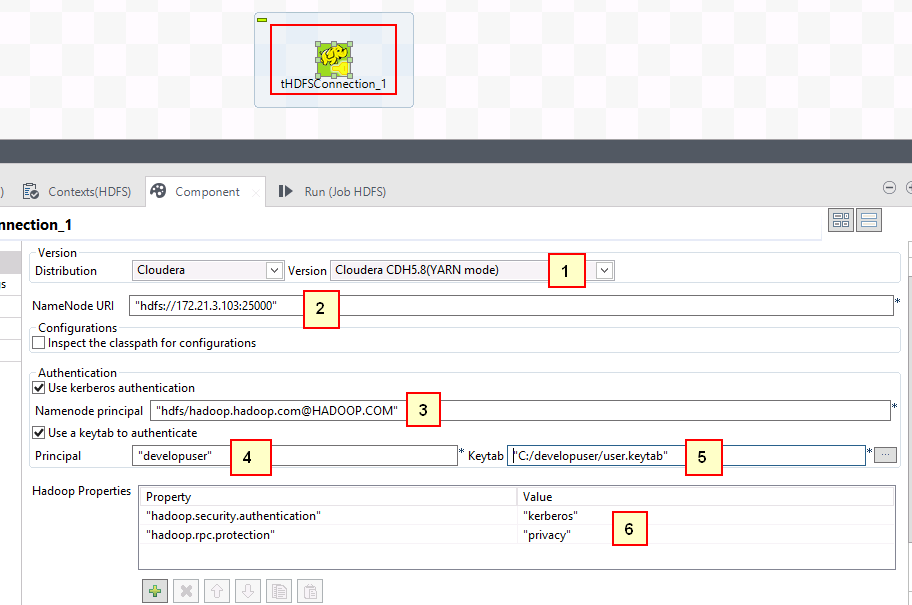
In detail：
1: Cloudera CDH 5.8(YARN mode)
2: "hdfs://172.21.3.103:25000"
3: "hdfs/hadoop.hadoop.com@HADOOP.COM"
4: "developuser"
5: "C:/developuser/user.keytab"
6: "hadoop.security.authentication" -> "kerberos"
"hadoop.rpc.protection" -> "privacy"
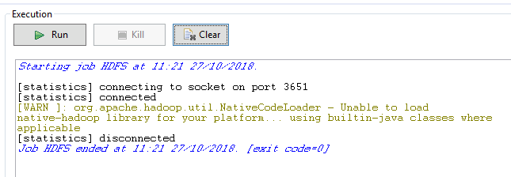
HDFS Get Procedure¶
- The whole process is shown as the following pic:

-
The configuration of tHDFSConnection component does not change
-
The configuration of tHDFSGet component shown as follows
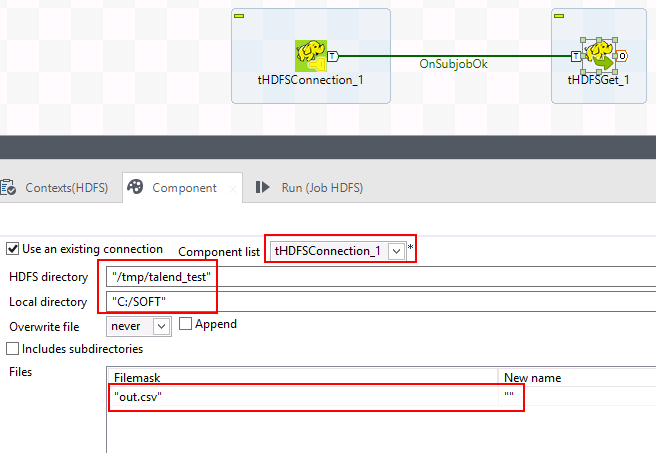
Note: Put the out.csv into the HDFS filesystem with the following directory /tmp/talend_test, C:/SOFT is the local folder for file output

- TEST completed：
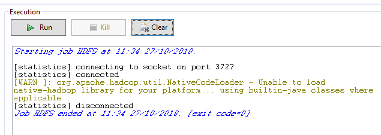
Check the test outcome by coming into the local directory C:/SOFT
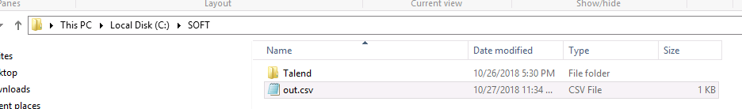

HDFS Put Procedure¶
-
The whole process is shown as the following pic:
-
The configuration of tHDFSConnection component does not change
-
The configuration of tHDFSPut component shown as follows
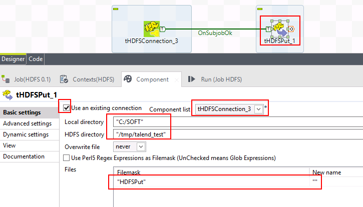
Note: Before the test starts, create HDFSPut.txt located at the directory C:/SOFT with its content shown as follows
It is created on a local PC.

- Test Completed：

Login into the cluster to check the test outcome:

Connecting Talend to Hive¶
Purpose¶
Configuring Talend related Hive processor to connect FusionInsight HD Hive
Prerequisites¶
-
Installing Talend 6.4.1 completed
-
Installing FusionInsight HD cluster and its client completed
Hive Connection Procedure¶
- The Talend version for Hive connection is 6.4.1
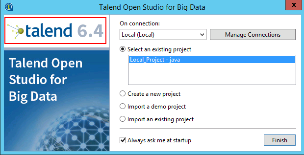
- The whole process is shown as the following pic:
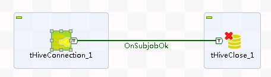
- The configuration of tHiveConnection component shown as follows

1: Custom-Unsuported
2: Hive2
3: "172.21.3.103:24002,172.21.3.101:24002,172.21.3.102"
4: "24002"
5: "default"
6: "developuser"
7: ";serviceDiscoveryMode=zooKeeper;zooKeeperNamespace=hiveserver2;sasl.qop=auth-conf;auth=KERBEROS;principal=hive/hadoop.hadoop.com@HADOOP.COM;user.principal=developuser;user.keytab=C:/SOFT/cfg/user.keytab"
Note: Need to click the button which besides the Distribution to import the required jar files of FusionInsight HD. If there still need to add extra jar files, you can complete this step either by Talend itself or manually add these jar files.

- Test Completed：
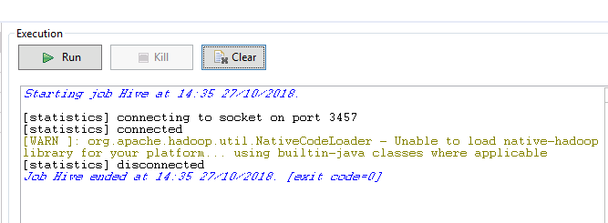
Hive Create Table & Load Procedure¶
-
The configuration of tHiveConnection component does not change
-
The configuration of tHiveCreateTable component shown as follows

Note: It is required to Edit schema of the table

- The configuration of tHiveLoad component shown as follows
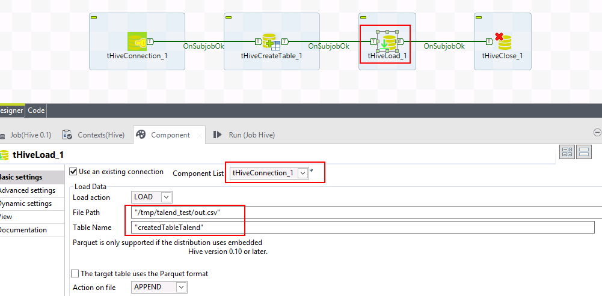
Note: Before the test starts, the file out.csv need to be uploaded into the hdfs filesystem directory /tmp/talend_test/

The content of out.csv shown as follows
：
1;EcitQU
2;Hyy6RC
3;zju1jR
4;R9fex9
5;EU2mVq
- The configuration of tHiveClose component shown as follows
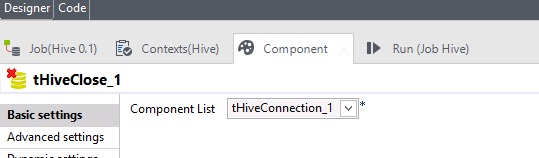
- Test Completed：
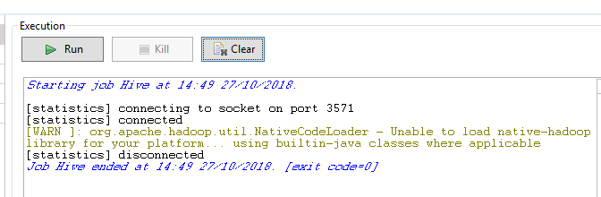
Check the table createdTableTalend by login into the cluster

Hive Input Procedure¶
- The whole process is shown as the following pic:

-
The configuration of tHiveConnection component does not change
-
The configuration of tHiveInput component shown as follows

Note: It is required to Edit schema of the hive table

-
The configuration of tLogRow keeps by default
-
The configuration of tHiveClose component shown as follows
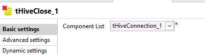
- Test Completed：
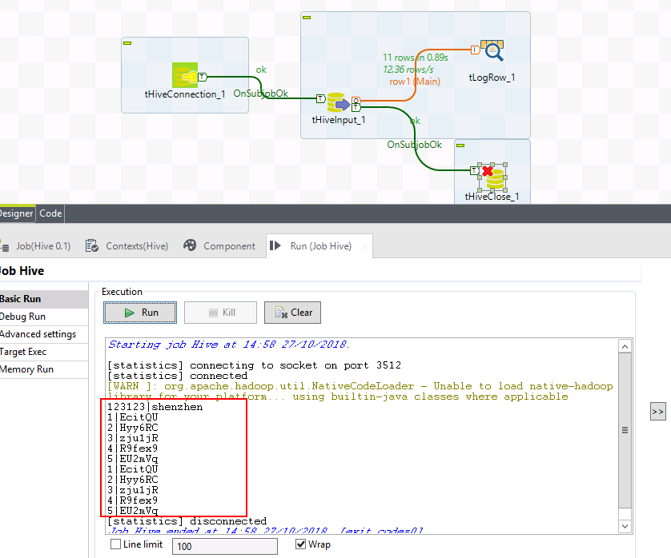
Hive Row Procedure¶
- The whole process is shown as the following pic:

-
The configuration of tHiveConnection component does not change
-
The configuration of tHiveRow component shown as follows
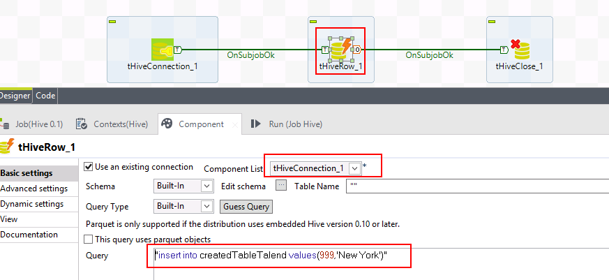
Note: It is required to Edit schema of hive table
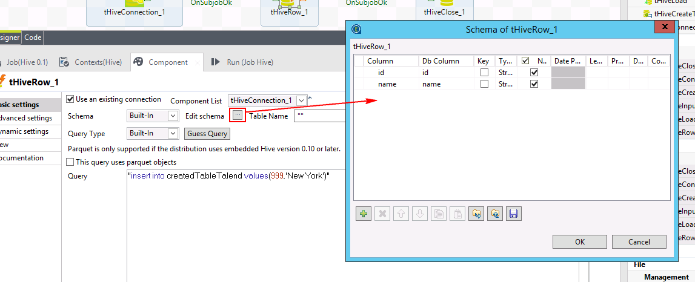
- Test Completed：
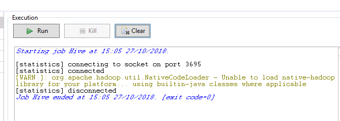
Check the cluster outcome by login into the FusionInsight Cluster
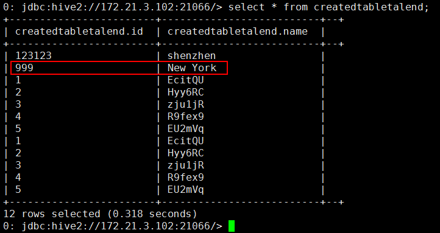
Connecting Talend to HBase¶
Purpose¶
Configuring Talend related HBase processor to connect FusionInsight HD HBase
Prerequisites¶
-
Installing Talend 7.0.1 completed
-
Installing FusionInsight HD cluster and its client completed
HBase Connection Procedure¶
- The whole process is shown as the following pic:

- Using eclipse to export the LoginUtil which from HBase sample project code of FusionInsight HD client (Sample project code in this time can be found by following directory
C:\FusionInsightHD\FusionInsight_Services_ClientConfig\HBase\hbase-example)


-
Find the tHbaseConnection component by Palette

-
The configuration of tHbaseConnection shown as the following pic:
Note: It is required to import the jar files of HBase sample project and the exported hbase_loginUtil.jar
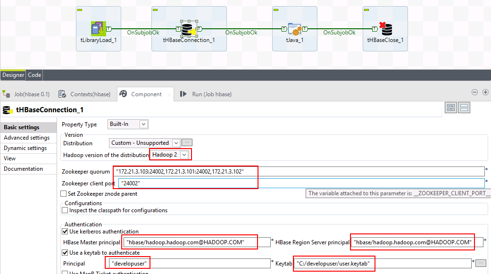
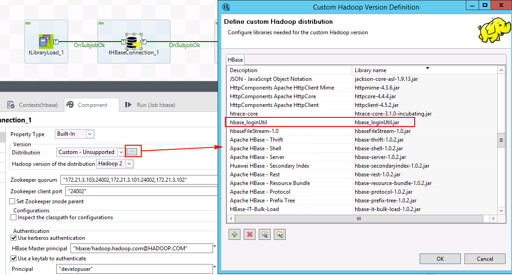
hbase-example required jar faile can be located by the following directory C:\FusionInsight_Services_ClientConfig\HBase\FusionInsight-HBase-1.0.2.tar.gz\hbase\lib
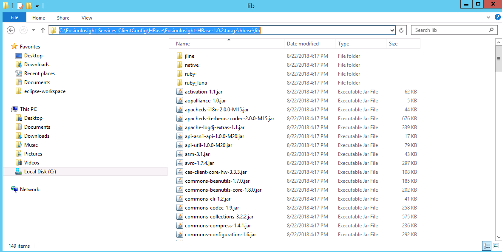
- The configuration of tLibraryLoad shown as folloing pic:

Click on Advanced settings and add the java code import com.huawei.hadoop.security.LoginUtil; shown as follows:
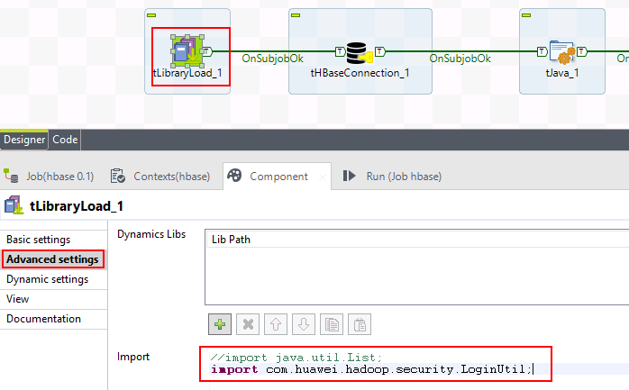
- Use tJava component to customize the tHBaseConnection component

The content of the Java code shown as follows：
org.apache.hadoop.conf.Configuration conf = org.apache.hadoop.hbase.HBaseConfiguration.create();
System.setProperty("java.security.krb5.conf", "C:\\developuser\\krb5.conf");
conf.set("hadoop.security.authentication","Kerberos");
conf.addResource(new org.apache.hadoop.fs.Path("C:/SOFT/cfg/core-site.xml"));
conf.addResource(new org.apache.hadoop.fs.Path("C:/SOFT/cfg/hdfs-site.xml"));
conf.addResource(new org.apache.hadoop.fs.Path("C:/SOFT/cfg/hbase-site.xml"));
System.out.println("=====");
System.out.println(org.apache.hadoop.hbase.security.User.isHBaseSecurityEnabled(conf));
System.setProperty("java.security.auth.login.config", "C:/developuser/jaas.conf");
LoginUtil.setJaasConf("developuser", "developuser", "C:\\developuser\\krb5.conf");
LoginUtil.setZookeeperServerPrincipal("zookeeper.server.principal", "zookeeper/hadoop.hadoop.com");
LoginUtil.login("developuser", "C:/developuser/user.keytab", "C:/developuser/krb5.conf", conf);
globalMap.put("conn_tHbaseConnection_1", conf);

HBase Input Output Procedure¶
-
The content of the Java code shown as follows：

-
The configuration of tLibraryLoad，tHBaseConnection，tJava, tHBaseClose do not change
-
The configuration of tFileInputDelimited shown as following pic:
Note: It is required to Edit schema of
out.csv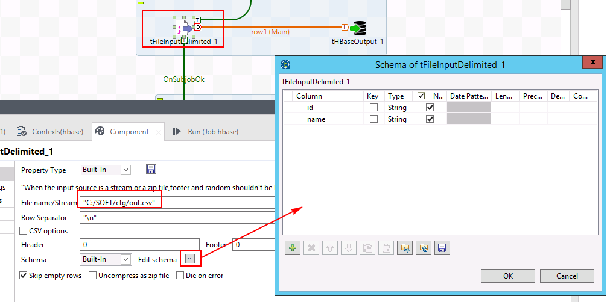
The content of
out.csvshown as follows:1;EcitQU 2;Hyy6RC 3;zju1jR 4;R9fex9 5;EU2mVq -
The configuration of tHBaseOutput shown as folloing pic:
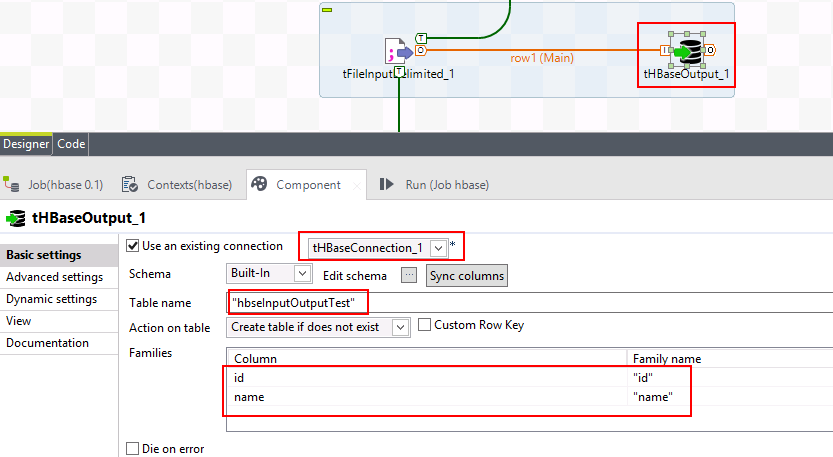
Note: It is required to Edit Schema of table:

- The configuration of tHBaseInput shown as folloing pic:
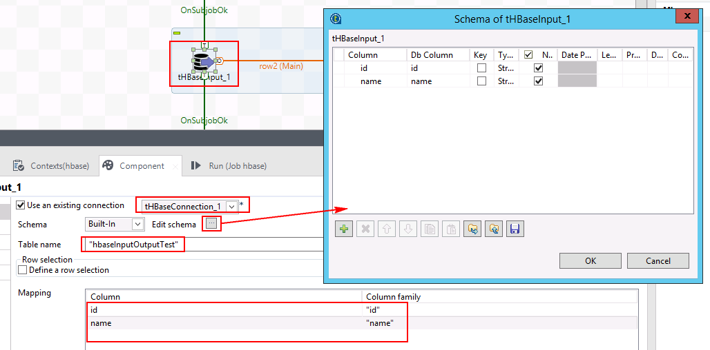
-
The configuration of tLogRow keeps by default
-
Test Completed:
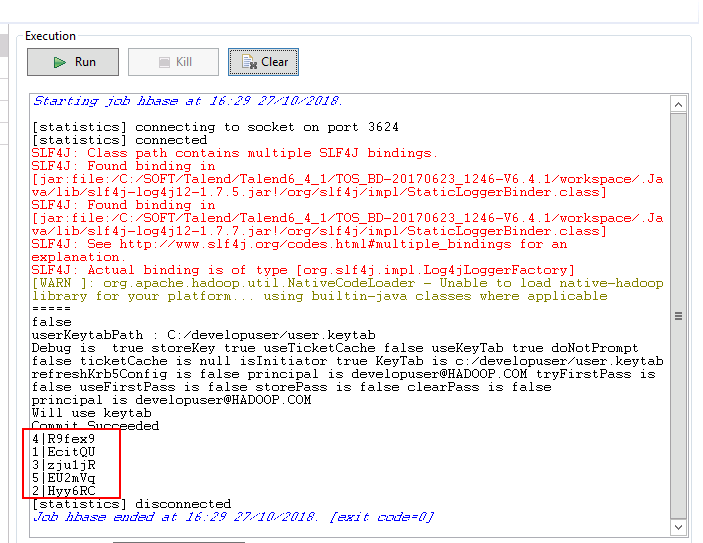
Login into the FusinInsight HD cluster and check the HBase table hbaseInputOutputTest by using following comands:
hbase shell
scan 'hbaseInputOutputTest'